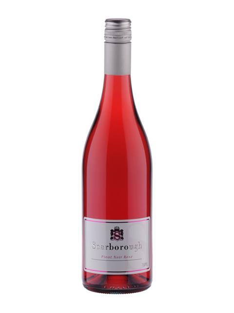

A home grown Rosé the colour of rubies, that your picnic rug has been in search of. With vibrant berry intensity, a hint of sweetness and a rasp of tannin, it ends with mouthwatering freshness. Serve chilled with duck parfait and cherry compote.
